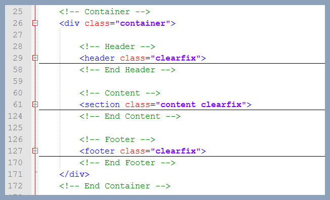
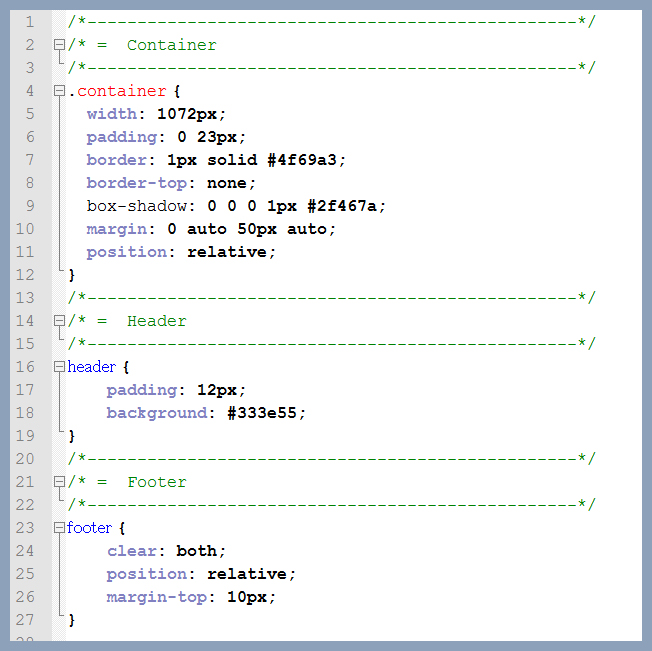

We Care - Premium Medical HTML Template
Installation
You can view this template in any web browser from your desktop computer. Because the files are written in HTML, you do not need an internet connection in order to display or edit the template.
All of the HTML files are given a descriptive name to make it easier to distingish what each file will display.
Upload to The Server
-
It's important to understand that you must either have your own server space or use someone elses. The server space can be purchased at many different places around the internet. You need somewhere to put the files that you purchased so others can find them online.
-
Select /html folder and then choose the template color you want. After you choose, there will have several files with the extension labeled .html. This is where all your content will. In addition to .html you should see a file labeled .css..css files are going to be the files that will tell the .html how to to be styled. CSS is simply a way to take text, images, and other elements and change the look of them. It's very important to keep the .css file with the HTML or the HTML will not look how the design is meant to look. Along with the HTML and CSS files, you will also have three additional folders to upload; css, images, and js.
-
Start your FTP client (I persoanlly use Filezila which is free) and login. Login to your server. You will need your server name (often times this will be your domain name), username, and password that you setup with the hosting company.
-
Locate the domain folder you wish to upload your template files to on your server. You are going to want to click and drag every file that you have labeled .html, .css, .js into your FTP client.
-
Once the files are done uploading, you can try access your website via browser.
HTML structure
This site template has a fixed layout width of 1072px and it's Fully Responsive.
The main structure of this site is wrapped in a 'container' div. Inside of that div you will find all the major sections that you need to edit/modify.

CSS Structure
I'm using one main CSS file (css/style.css), in this template which you are free to modify depending on the customization you require. There are also two additional style sheets that I do not recommend changing. Those style sheets reside in the 'css'folder. The four additional style sheets are:
The main CSS file contains all of the specific stylings for the page. The file is separated into sections using:

If you would like to edit a specific section of the site, simply find the appropriate label in the css file, and then scroll down until you find the appropriate style that needs to be edited.
Scripts
This theme uses several scripts many of which are documented within the theme's code. If you're a developer, you will find this particularly useful.
PSD Files
Photoshop files are included with the download package place in /psd/ folder.
You can find all 9 PSD's in "PSD" folder.